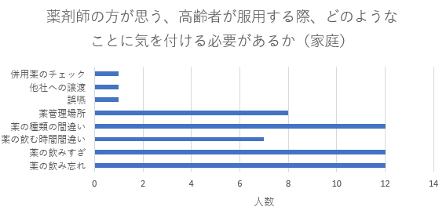
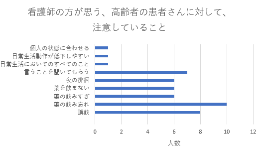
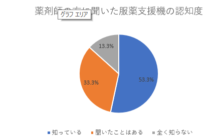
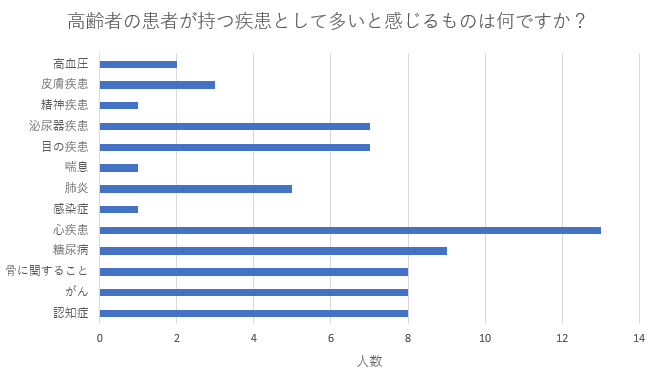

高齢化社会の現状を知ろう
下の図を見てわかるように、日本人人口のなかで高齢者の割合は年々増え続けている。高齢化社会が深刻化していると言えるだろう。

高齢化社会はレベルに応じて、３つに分類されます。
総人口における６５歳以上の高齢者の割合が７％➡高齢化社会
14％➡高齢社会
21％➡超高齢社会
日本はこの3つの分類の中で分けると、超高齢化社会に分類される。実は、超高齢化社会といわれているのは世界で22か国！
日本は、モナコの次、世界で2番目に高齢化が進んでいると言われています。
（GROBAL NOTE「世界の高齢化率（高齢者人口比率）国別ランキング・推移」より）では、増え続けている高齢者は今どういった問題を抱えているのだろうか。また、その解決に向けて考えられている方法や政策について、福祉と医療の面を主に考えてみようと思う。
まず、問題点を挙げるために私は、看護師さんや薬剤師さんにアンケートを実施した。
１２名の看護師さんにアンケートにご協力いただいき１２人中９名の方が薬の管理について不安があるという結果が得られた。

そして、薬剤師の方１５名にご協力していただいたアンケートでも同様に薬の管理による問題に対して気を付けているという結果が得られた。

また、薬剤師の方へのアンケート結果やインタビューを通して問題点として挙がってきたものは、認知症患者が多いことと情報の伝わりにくさがありました。


ここで浮かび上がってきた、認知症の実態も調べてみました。
すると、以下のように認知症患者は年々増加していることが見て取れる

現在認知症患者は、２０２２年時点で６５歳以上方の８人に1人といわれている。
（公益財団法人日本ケアフィット共育機構「日本高齢者人口3,619万人！」より）
このような状態から、現在完治が難しい病気にかかってしまう高齢者も増える一方、その方々を支えられる力が弱くなっている。少しでも楽に介護・介助などができるようになればと思い、以下のことについて調べた。